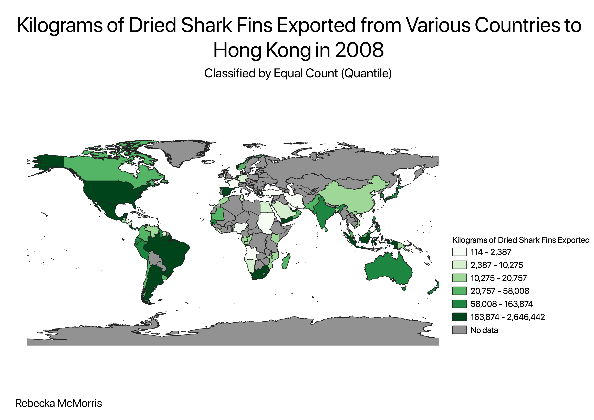

Homework 9: Choropleth with Chosen Vector and CSV
Rebecka McMorris
I chose to do a map representing shark finning across the world. My dream job is to one day work with sharks and it's sad to think about how rapidly their populations are declining. One of the main reasons for this decline is the shark fin trade, where sharks are caught and their fins are cut off for soup or general trading. The shark often dies and other resources are extracted from the body, but sometimes they are thrown back in the water to drown since they can no longer swim without their fins. Sharks are considered "keystone" species in ocean ecosystems, which means without them the food chain would collapse and habitats would suffer. Although shark fin soup is an important part of many cultures, the rate at which sharks are being caught and killed is not sustainable. Ecosystems may soon reach a point of serious damage since many shark species are now considered endangered. This map shows which countries export the greatest amount of shark fins. This data is from 2008, so it's likely that the numbers have since increased due to more advanced fishing techniques and technologies.

Data used for this project
CSV Data Source
CSV dataset
Link to geoJSON